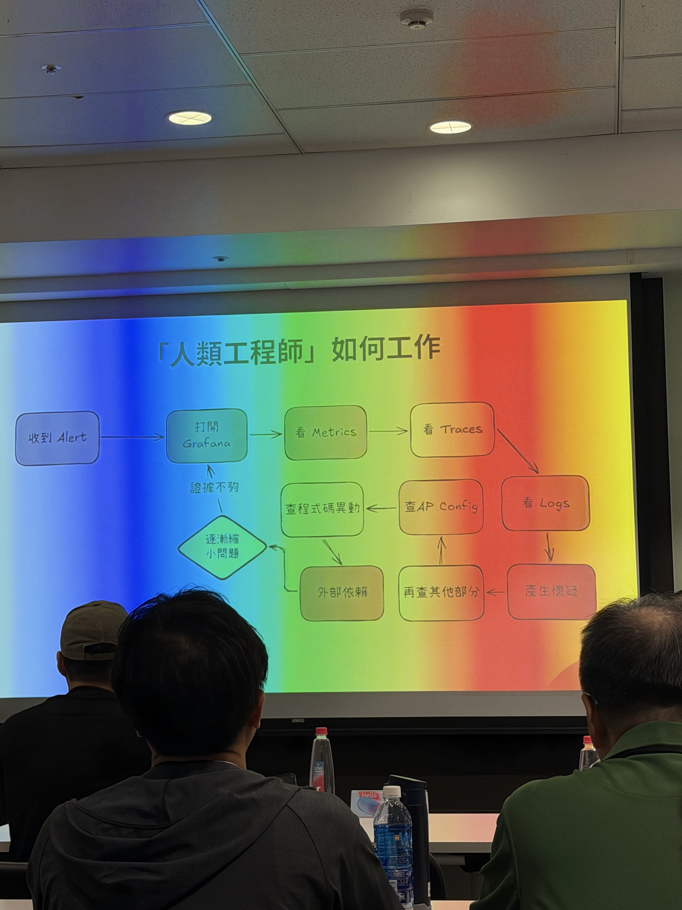
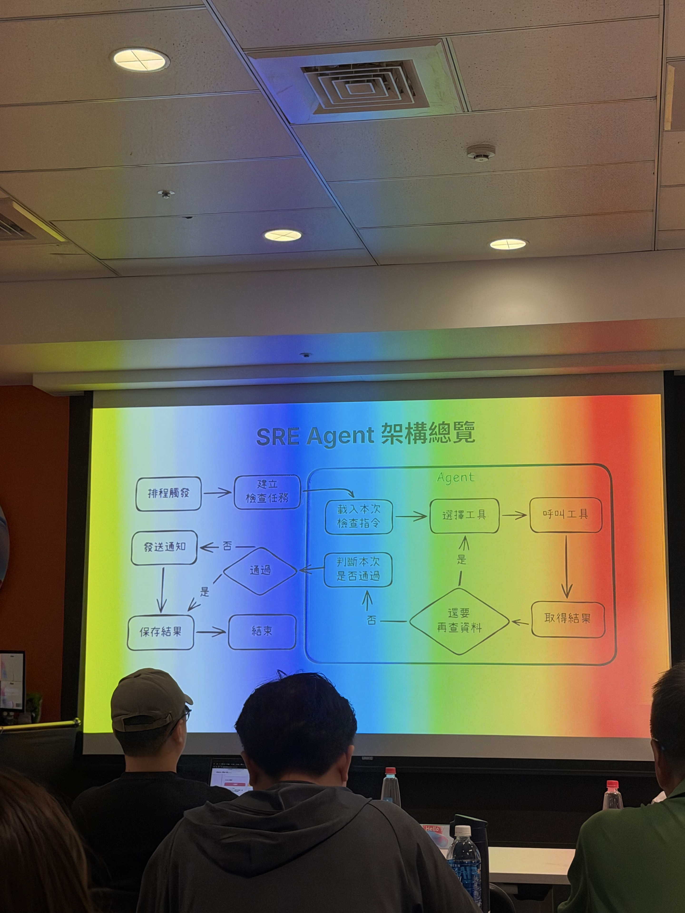

PART 2 / COURSE REVIEW · 10/15 11:15–12:00 · Duo
當 AI 開始調查事故：讓 Kubernetes 告警從噪音變決策
課堂圖片：人工調查與 SRE Agent 架構
講師：Duo
講師經驗：大型電商 Senior Engineer，具資深軟體架構師與技術組長經驗，累積超過 15 年跨產業、跨平台開發經驗，涵蓋 Java、Python、Go、Rust 等技術。
original classroom images · aspect ratio preserved

